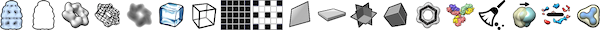

Sample Data
Manipulation Outside of VR
Manipulation in VR
Volume Rendering Options
Cropping
Viewing Planes
This tutorial covers basics of using ChimeraX virtual reality to view DICOM medical imaging data. It assumes you have the necessary equipment for virtual reality already installed and set up for the room. ChimeraX works with virtual reality (VR) systems supported by SteamVR, such as HTC Vive, Oculus Rift and Samsung Odyssey headsets. Descriptions below are for Vive hand controllers, but other hand controllers have buttons that are generally similar in position and function.
See also: DICOM Quick Reference, ChimeraX for Medical Image Analysis
4-24533.zip – one chest scan of many in the RIDER Lung CT collection from the Cancer Imaging Archive:
Clark K, Vendt B, Smith K, et al. The Cancer Imaging Archive (TCIA): Maintaining and Operating a Public Information Repository. Journal of Digital Imaging. 2013; 26(6): 1045-1057.
The data have been anonymized and are freely available. This sample data folder should be downloaded and unzipped in some location you will be able to find later. Although this tutorial does not include clinical analysis, it should be noted that the chest scan shows a tumor in the right lung, at approximately Z-planes 146-185.

|
Start ChimeraX by clicking its icon. After the ChimeraX window appears, open the sample data:
Menu: File... Open DICOM Folder (dialog shows Format: DICOM image), browse to location, select directory, click Choose
Just one Z-plane is shown initially, even though all the planes have been read. The Volume Viewer tool shows a histogram of the data with plane as the chosen display style. Below the histogram is a slider for viewing different planes along Z. Try dragging the slider.
The small squares connected by a yellow line on the histogram are thresholds, the control points for mapping values to colors and intensities. They can be moved by dragging in the Volume Viewer histogram, and added and deleted using the context menu (right-click or Ctrl-click depending on platform).
For 3D volume rendering, change from plane to volume in Volume Viewer. For full resolution, set the step value to 1. Step size may automatically increase when more of the data is displayed, such as when you change from a single plane to the full volume, but it can still be adjusted manually. Increasing the step size (decreasing the resolution) may help if rendering is slow. If the display seems too dark or light, move the thresholds to your liking.

|
Try moving the model around:
| rotate
|
left mouse button |
| trackpad click-drag | |
| translate in 2D
|
middle or right mouse button |
| trackpad + Alt | |
| zoom
|
mouse scroll wheel |
| trackpad 2-finger drag (except pinch on Mac if multitouch is enabled) |
Turn off perspective by entering the command:
camera ortho
One way to bring the whole display into view at any time is with the
command: view clip false
In virtual reality, entering commands is inconvenient; instead, the hand controllers are used to click icons and move models.
Show the Density Map Toolbar
of icons that act on volume models
(menu: Tools... Toolbar... Density Map Toolbar).

If the Mouse Modes for Right Button
toolbar isn't already shown, use the same menu to start it.

Hide sets of icons not needed for this tutorial, i.e., in menu Tools... Toolbar, uncheck Graphics Toolbar and Molecule Display Toolbar.
Take a moment to look at the hand controllers: Vive controllers each have a trigger to “pull” with the index finger, a grip button on the side, and a larger trackpad on the top that can be pressed with the thumb. Above the trackpad is a smaller menu button with horizontal lines on it, and the button below the touchpad turns the controller on. Buttons on other controllers are similar.
Verify that the hand controllers are turned on, then start VR:
Command: vr on
(SteamVR starts automatically, providing you had previously signed in to it from the same computer and chose to have your password remembered.)
On the screen, you can see that the icon bars have been moved to the right side of the graphics window. In the process, other tool panels may have been vertically compressed; drag to make the Volume Viewer panel tall enough to show the full height of the histogram.
Put on the headset, and try moving the model. The hand-controller positions are shown in the headset as cones.
| rotate
|
rotate hand controller with trigger pressed |
| translate in 3D
|
move hand controller with trigger pressed |
| zoom
|
move hand controllers farther apart or closer together with triggers pressed |
| center and rescale
(useful to recover a reasonable view) |
click grip button |
| show, hide, move ChimeraX control panel | use menu button |
Continue moving the model as you wish throughout the tutorial.
Click the menu button to show the ChimeraX control panel in the headset. The control panel is just the set of tool windows to the right of the graphics window in the desktop view. In VR, it can be moved around with the menu button pressed, or hidden by just clicking the button again.
You can click and drag thresholds in the Volume Viewer histogram in the control panel with any button (trigger, trackpad, or grip) of either hand controller. To properly place the cone tip in 3D, it may help to first pierce the panel, then draw back slightly.
As for icons, don't click them yet, but note:
* Any controller button (trigger, trackpad, grip) can be used to click a Density Map icon.
* Clicking a Mouse Modes icon with a controller button assigns whichever button was clicked to the corresponding function.Leaving triggers with their default mouse modes (rotation, translation, zooming) is usually a good idea, but up to four other functions can be assigned, to the grip and trackpad on each controller. If a trigger is accidentally reassigned, using it to click either the rotate
or translate
mouse-mode icon returns it to the default behavior.
When rotating the model, you may have noticed jumps in brightness as
rendering switches between using planes along the X, Y, or Z data axes.
This is the 2D projection mode
 .
.
3D presets are based on definitions in the Horos program for medical image visualization and analysis. Several are available from the command line, but only “Airways II” is currently available as an icon.
Windowing changes all of the thresholds collectively:
vertical motions shift all the thresholds in parallel
to higher or lower values (left ↔ right on the histogram) and
horizontal motions move the thresholds symmetrically farther apart
or closer together (broadening or narrowing their range of values).
If you want to return to the “Airways II” 3D preset values, click
 .
.
Cropping is useful for examining a smaller region of interest and for speeding up rendering.
(Besides cropping, another way to speed up rendering is by clicking
 to subsample the data at step 2. Clicking
to subsample the data at step 2. Clicking
 returns to full resolution.)
returns to full resolution.)
At first, a single Z plane was displayed. You could return to Z-planes
by clicking  ,
but instead, use a different method that allows viewing planes along
any of the data axes:
,
but instead, use a different method that allows viewing planes along
any of the data axes:
The data may now be very dim or even invisible, because threshold settings that worked with the full volume are not suitable for a single plane.